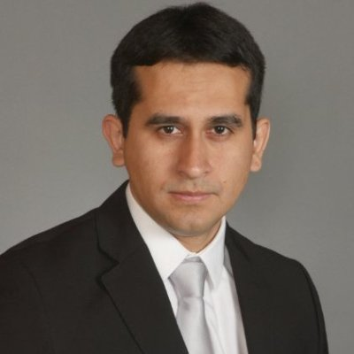

My name is Cesar Dextre, I am from Peru. I studied economics at Universidad del Pacífico with a major in Financial Economics also I am a CFA Charterholder. I have more than 4 years of experience in asset management at Prima AFP, a pension fund, primarily analyzing equity and fixed and income securities of different sectors such as: Metals & Mining, Airlines, and Payments. I want to continue in finance, but I am looking to transition into Investment Banking, because I want to deliver complex solutions to corporate and institutional clients
Prima AFP is the second largest Peruvian pension provider with 12 billion of dollars of assets under management
Universidad del Pacifico is a private university located in Lima, Peru.